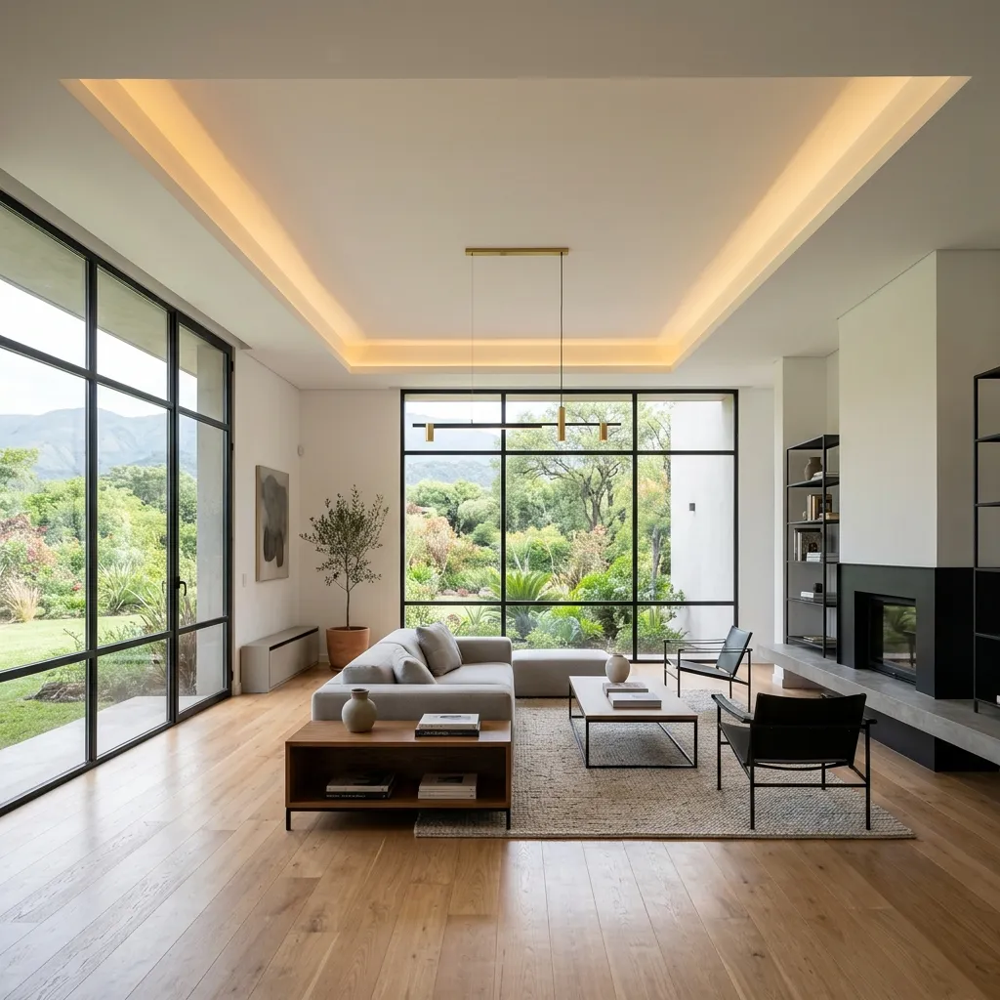
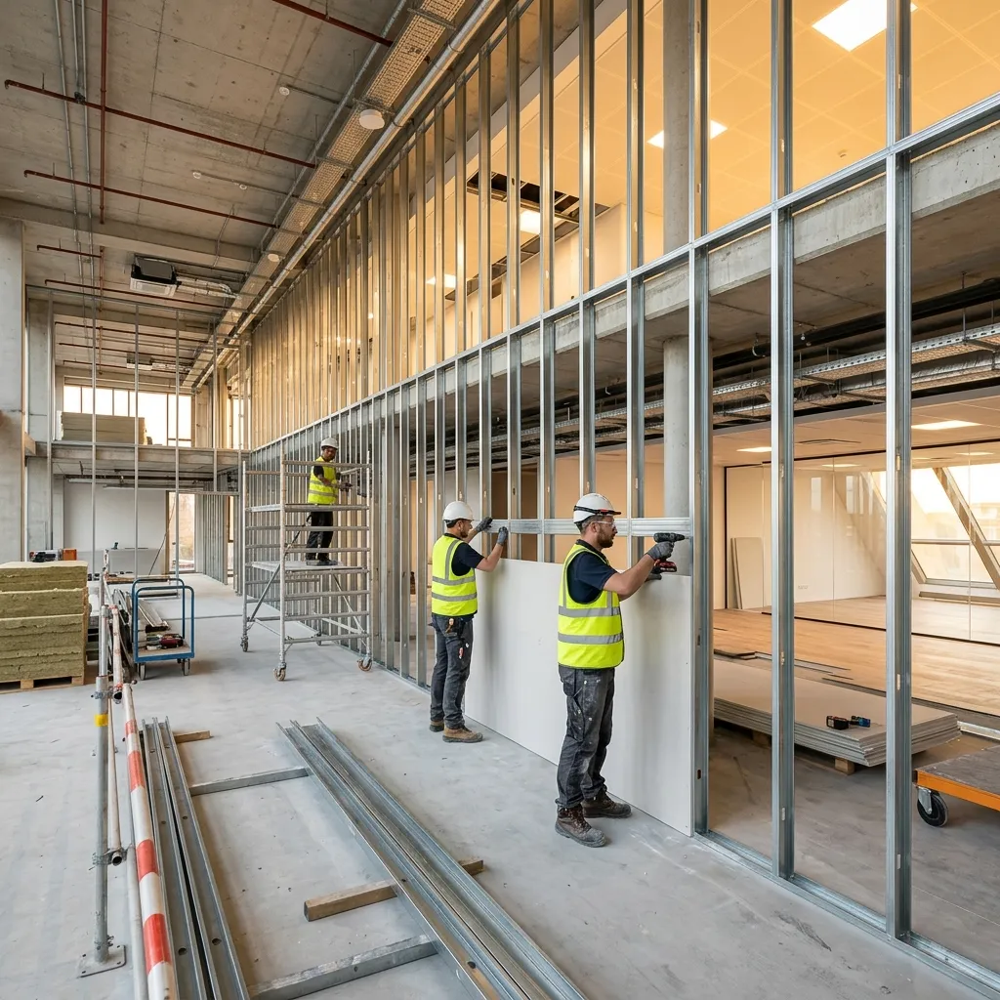
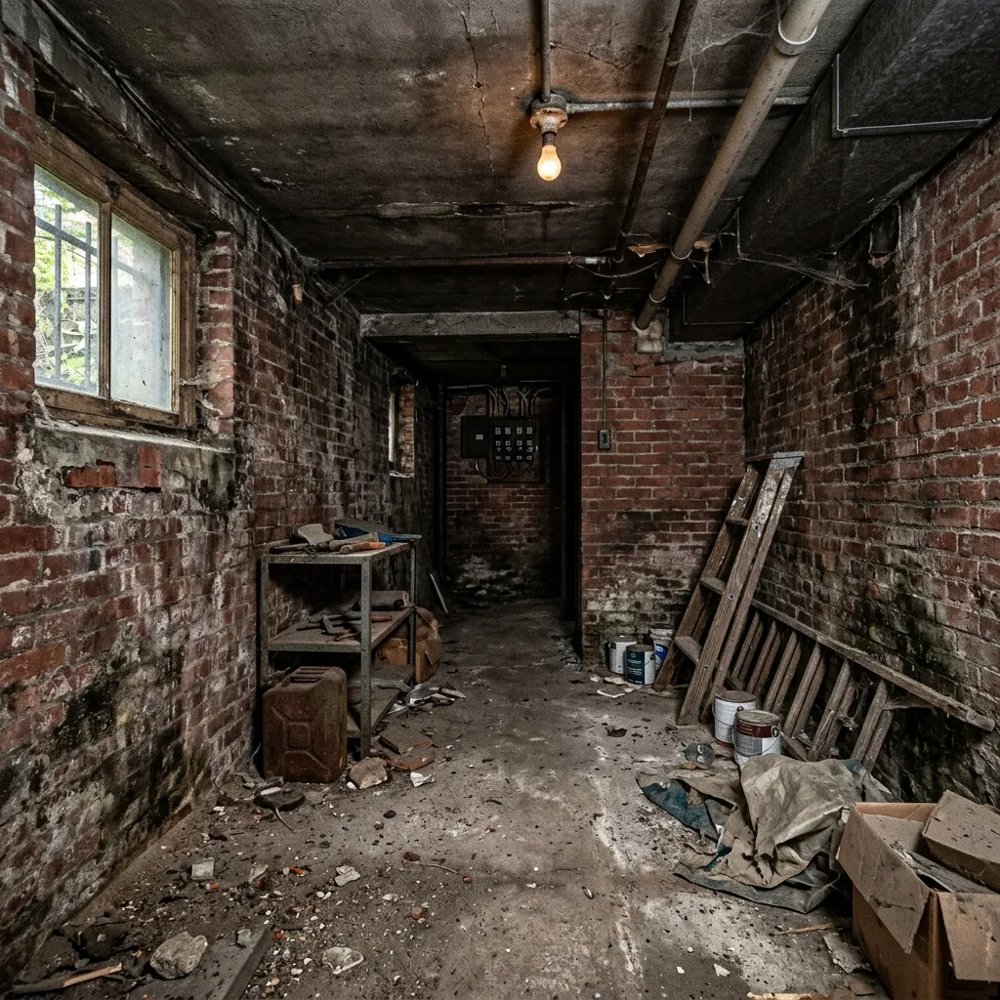

Construcción en Seco
y Durlock en Tucumán
Transformamos tus ambientes con el sistema de construcción más limpio y eficiente. Especialistas en tabiques divisorios, cielorrasos suspendidos y soluciones anti-humedad llave en mano. Diseño sismorresistente con dirección técnica profesional de arquitectos.
En Tucumán, realizamos proyectos de construcción en seco con placas de yeso (Durlock) y placas cementicias aptas para el clima del NOA. Diseñamos tabiques divisorios, cielorrasos suspendidos e insonorizaciones acústicas bajo dirección técnica de arquitectos, garantizando aislación térmica superior, resistencia sísmica y una obra limpia terminada hasta 3 veces más rápido que la mampostería tradicional.

check_circle Obra Terminada ByB
Paredes 100% lisas, térmicas y con iluminación de diseño.
¿Por qué elegir la Construcción en Seco?
Compara las ventajas del sistema de placas de yeso y perfiles frente a la construcción tradicional con ladrillos.
Rapidez de Montaje
Una obra en seco se realiza en 1/3 del tiempo. Sin tiempos de fraguado húmedo, lista para pintar de inmediato.
-70% TiempoAislamiento Térmico
La cavidad de los tabiques permite incorporar lana de vidrio o EPS, disminuyendo el consumo de gas y luz.
-60% ConsumoObra Limpia
Prácticamente sin escombros ni polvo húmedo de mezcla. Ideal para remodelar viviendas habitadas.
98% Libre de EscombrosFlexibilidad de Diseño
Permite crear curvas, cielorrasos suspendidos multinivel, nichos en paredes e iluminación indirecta empotrada.
Diseño InfinitoEspecificaciones de Placas y Sistemas
Trabajamos exclusivamente con materiales normalizados que garantizan la seguridad estructural, el aislamiento termoacústico y el comportamiento óptimo ante el fuego y la humedad en Tucumán.
| Sistema / Placa | Espesores & Perfiles | Aislación / Resistencia | Uso Principal |
|---|---|---|---|
| Durlock Estándar (ST) | 12.5 mm / Montantes 69 mm | Aislación acústica media (38 dB) | Tabiques divisorios y revestimientos internos |
| Resistente a Humedad (RH / Verde) | 12.5 mm / Montantes 69 mm | Aditivos hidrófugos siliconados | Baños, cocinas y lavaderos (zonas húmedas) |
| Resistente al Fuego (RF / Roja) | 12.5 o 15 mm / Estructura reforzada | Fibra de vidrio (Retarda hasta 120 min) | Muros divisorios de propiedad y salas térmicas |
| Cielorraso Suspendido | 9.5 mm / Perfil Omega y Solera | Junta tomada (Superficie continua) | Techos interiores, cajones e iluminación LED |
| Placa Cementicia (Exterior) | 8 a 10 mm / Perfiles estructurales | 100% impermeable e intemperie | Fachadas, aleros y muros exteriores |
Nuestros Sistemas de Construcción en Seco
Selecciona cada servicio para conocer los materiales utilizados, el proceso técnico de colocación y las ventajas de cada instalación de Durlock y placas.

Tabiques y Paredes Divisorias de Yeso
Ideales para dividir ambientes de forma rápida, limpia y económica. Estructura interna de acero galvanizado con placas de yeso a ambas caras. Añadimos lana de vidrio en su interior para asegurar un excelente aislamiento termoacústico entre habitaciones. Terminaciones completamente lisas y listas para pintar.
El Impacto de una Obra Limpia
Mira el cambio radical al revestir paredes rústicas o divisorias mediante construcción en seco. Una transformación impecable en tiempo récord.

Simulador de Presupuesto m²
Obtén una estimación de presupuesto de materiales y mano de obra colocada según las dimensiones de tu proyecto en Tucumán.
Incluye materiales de estructura, fijación, placas, masilla, cinta de juntas, y mano de obra con supervisión de dirección técnica en Tucumán.
Asesoramiento profesional y cotizaciones cerradas.
Preguntas sobre Construcción en Seco
¿Quieres remodelar tu hogar en seco?
Hacemos visitas técnicas a domicilio sin cargo en San Miguel de Tucumán y Yerba Buena. Nuestro equipo tomará medidas precisas y te entregará una cotización formal llave en mano en 48 horas.